SearchFCR · CSCSU 2026
On the
Numerical Analysis
of Multi-Robot
Search & Rescue
A unified competitive-ratio framework for budgeted multi-robot search in unknown environments.
FCR = Df / Dopt · 5,000 paired Monte Carlo trials
CSULB · CECS
Authors
Fozhan Babaeiyan Ghamsari
Oscar Morales-Ponce
Spring 2026
github.com/foojanbabaeeian/Multi-Robot-Algo
FIG. 00 / COVER
01 / Motivation
Disasters
are search
problems.
Collapsed buildings, earthquake rubble, flood sites. A drone fleet can clear them faster — if it coordinates. Without coordination, robots revisit the same rooms while high-probability regions go unchecked.
SAME SEED · n=30 · R=3 · E=14
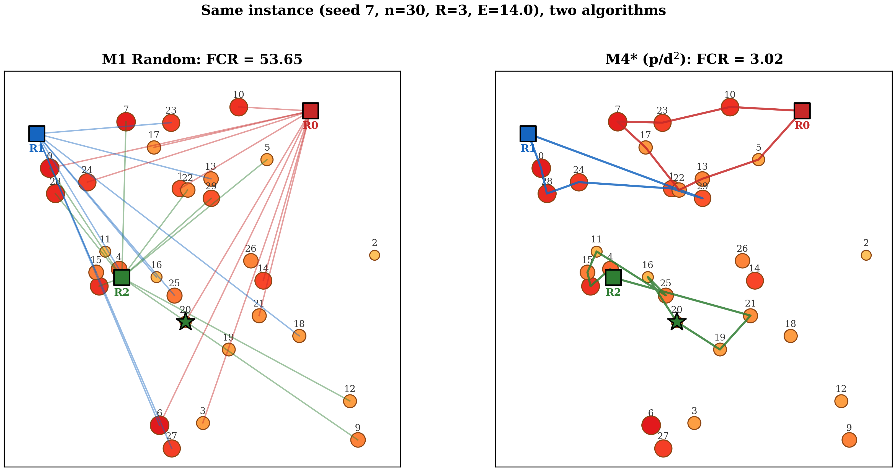
02 / Research Question
The question is not whether.
02 / 20
How do you coordinate a small fleet of battery-limited robots to find a target hidden among n sites — without knowing where it is?
Givens
- R robots, finite energy E
- n candidate sites in [0,L]²
- p prior probability per site
- τ one hidden target, drawn from p
Unknown
An assignment & an order of visits that minimize the finder’s travel.
SearchFCR02 · Question
03 / Metric
Finder Competitive Ratio
03 / 20
FCR =
Df
Dopt
Df
distance the finding robot actually traveled.
Dopt
distance an omniscient agent would have flown.
FCR = 1 → the finder flew the geodesic. Anything above is overhead from uncertainty.
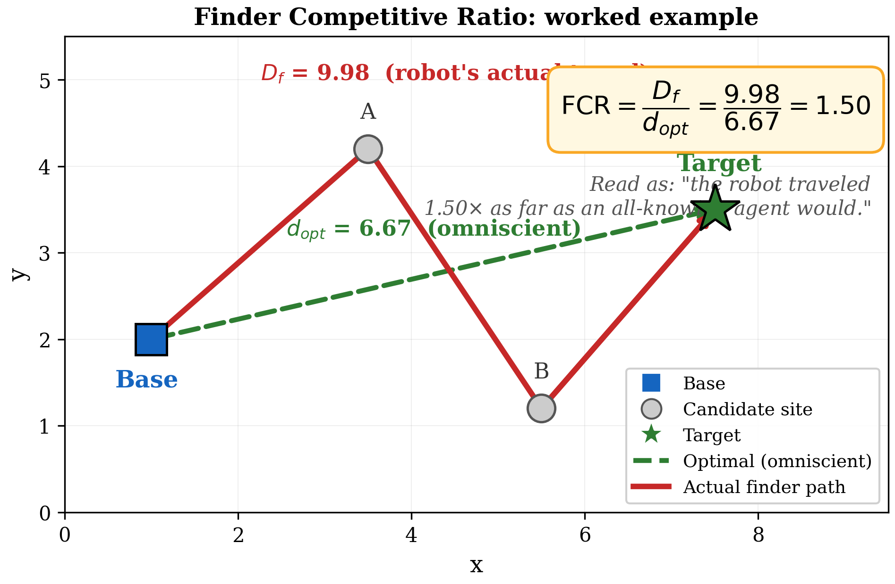
SearchFCR03 · Finder Competitive Ratio
04 / Framework
Four models, one ladder.
04 / 20
M1 · RANDOM
No comm.
Each robot solo.
Each robot solo.
ENERGY
∞
COORD.
none
M2 · AUCTION ∞E
SSI auction.
Battery-free.
Battery-free.
ENERGY
∞
COORD.
full
M3 · SINGLE SORTIE
Auction +
finite battery.
finite battery.
ENERGY
E
BID
p / d
CONTRIBUTION
M4★ · MULTI-SORTIE
Chain several
sites per trip.
sites per trip.
ENERGY
E
BID
p / d²
M1
+ COMMUNICATION
M2
+ FINITE BATTERY
M3
+ CHAIN EXTENSION
M4★
SearchFCR04 · Model Hierarchy
05 / Same Instance
Two algorithms. One seed.
05 / 20
M1 · RANDOM
Spaghetti tracks.
FCR
53.65
M4★ · AUCTION p/d²
Tight, ordered tours.
FCR
3.02
SEED 7 · n=30 · R=3 · E=14
≈ 18× shorter finder travel from coordination alone.
06 / How M4★ Runs
Auction, then chain.
06 / 20
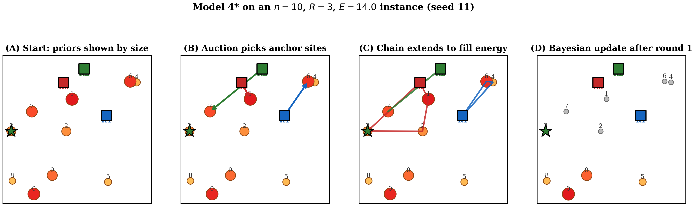
1
SSI Auction.
Each robot bids on every feasible site. Highest p/d² wins. Repeat until every robot has an anchor.
2
Greedy Chain.
From the anchor, append the next-best feasible site as long as the round-trip fits in remaining energy.
3
Bayesian Update.
Robots return to base, broadcast results, zero-out visited priors, renormalize, then re-auction.
SearchFCR06 · Algorithmic Walkthrough
07 / Primary Contribution
Why p/d²?
07 / 20
Cost foreclosure.
Anchoring at distance d burns 2d of the budget on base legs — leaving E−2d for chain extensions. Distant anchors aren’t just expensive; they foreclose on future hops.
Anchoring at distance d burns 2d of the budget on base legs — leaving E−2d for chain extensions. Distant anchors aren’t just expensive; they foreclose on future hops.
Stone’s rule
p / d
Linear distance penalty. Single-searcher optimum.
This work
p / d²
Quadratic penalty captures foreclosure under finite E.
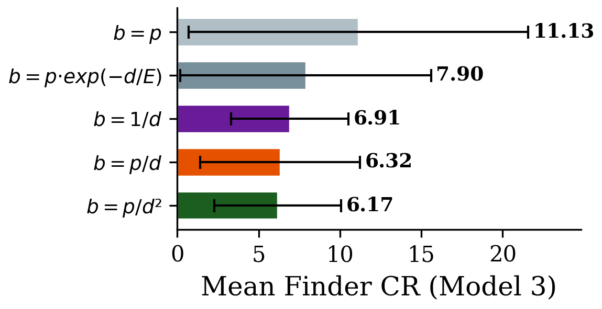
FIG. 07 · Mean FCR by bid function, 5,000 trials.
SearchFCR07 · The p/d² Bid
08 / Main Comparison
Headline results.
08 / 20
| Model | Mean FCR | ±95% CI | Median | σ |
|---|---|---|---|---|
| M1 · Random (∞E) | 18.74 | 0.486 | 14.12 | 17.53 |
| Hp/d · Hungarian | 7.38 | 0.138 | 6.12 | 4.97 |
| Hd · Hungarian | 6.88 | 0.101 | 6.72 | 3.63 |
| M3 · Auction Single | 6.32 | 0.136 | 5.08 | 4.91 |
| M4 · Auction Multi (p/d) | 3.16 | 0.065 | 2.32 | 2.34 |
| M4★ · Auction Multi (p/d²) | 3.11 | 0.058 | 2.37 | 2.11 |
| M2 · Auction (∞E) | 2.83 | 0.069 | 2.03 | 2.49 |
5,000 paired trials · n=30, R=3, E=14, L=10 · sorted by mean FCR.
Coordination Gain
6.6×
M1 → M2 · communication alone
Energy Penalty Recovered
90%
M3 → M4 · multi-node sorties
Best Energy-Bound FCR
3.11
M4★ · within 1.10× of unconstrained M2
SearchFCR08 · Table II
09 / Result 1
Coordination dominates fleet size.
09 / 20
From
18.74
to
2.83
Identical fleet size. Switching only the communication regime cuts mean FCR by a factor of 6.6.
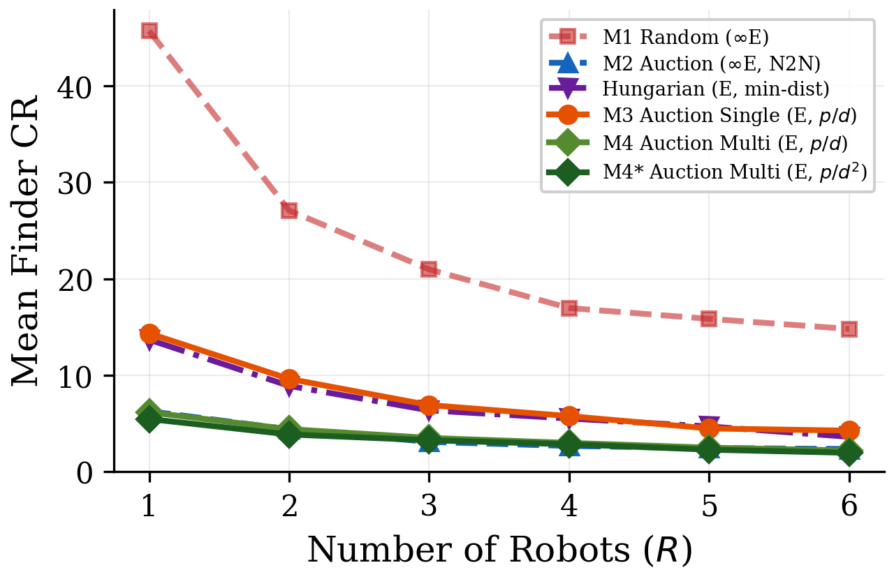
SEARCHFCR · RESULT 1
p < 0.001 · PAIRED WILCOXON · n = 5,000
10 / Result 2
SSI beats Hungarian.
10 / 20
Distributed auctions outperform the centralized distance-optimum — even when Hungarian gets the same prior info.
SSI · M3 (p/d)
6.32
HUNGARIAN Hd
6.88
PARADOX · Hp/d
7.38
Adding probabilities to Hungarian makes it worse — robots cluster on the same hot zone.
The lever isn’t the bid; it’s the iterative re-weighting baked into SSI. After each pick, the field re-bids on a smaller problem.
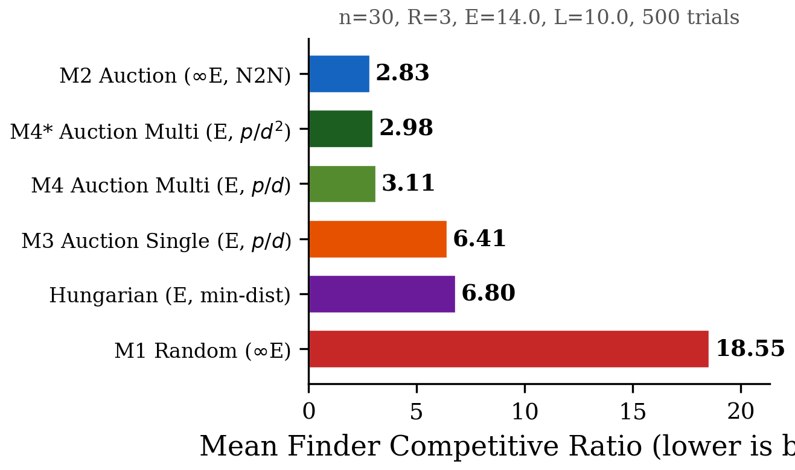
FIG. 10 · All seven baselines, default config.
SearchFCR10 · Mechanism Effect
11 / Result 3
Smart trips beat bigger batteries.
11 / 20
M3 · SINGLE
6.32
one site / sortie
M4 · CHAIN (p/d)
3.16
≈5.3 sites / sortie
M4★ · CHAIN (p/d²)
3.11
best with finite E
M2 · ∞ ENERGY
2.83
theoretical floor
M4 closes 90% of the gap to the battery-free ideal — with no extra hardware.
Iterations to find target drop from 4.81 (M3) to 1.38 (M4). Each greedy chain visits roughly five sites before returning home.
The lever to pull isn’t more drones or fatter batteries — it’s scheduling.
SearchFCR11 · Energy Recovery
12 / Parameter Sweep
The lead grows when budgets tighten.
12 / 20
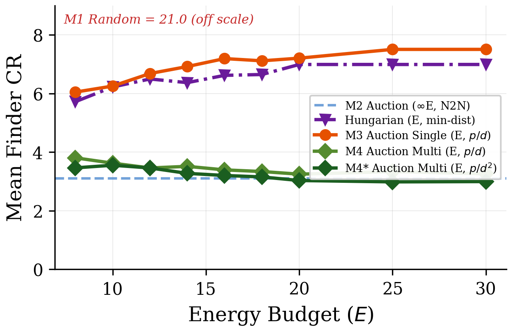
At E=8 (tight)
≈ 12%
M4★ lead over M4. Cost-foreclosure pressure peaks here.
At E=20+ (slack)
≈ 0%
Both bid functions converge: foreclosure stops biting.
Where it matters most.
Real SAR drones operate at the left edge of this chart — small batteries, long flights.
Real SAR drones operate at the left edge of this chart — small batteries, long flights.
SearchFCR12 · Energy Sweep
13 / Experiment 1
Robust to bad priors.
13 / 20
We perturb every prior with Gaussian noise σ and re-run. M4★’s margin over M4 widens as priors get noisier.
σ = 0
+0.13
absolute FCR margin
σ = 0.5
+0.49
absolute FCR margin
σ = 1.0
+0.43
absolute FCR margin
When the map of where survivors might be is unreliable — precisely the SAR reality — the quadratic penalty matters more, not less.
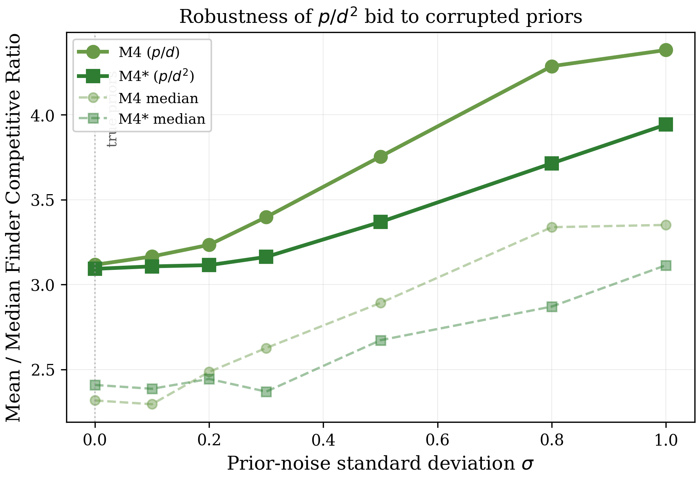
SearchFCR13 · Prior-Misspecification Robustness
14 / Experiment 2
Counterintuitive: 2-opt hurts.
14 / 20
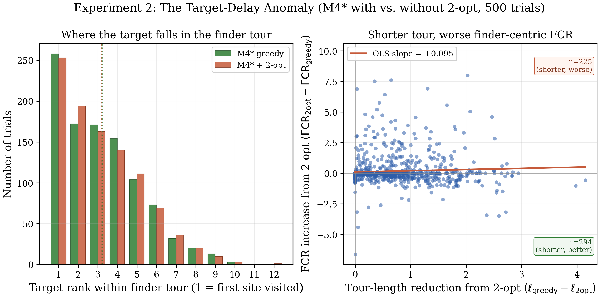
Polishing the tour with 2-opt shortens it on average — and worsens finder FCR by 6.58%.
Tour Length
↓ shorter
Finder FCR
↑ worse
Geometric optimization re-orders by efficiency, not by probability-weighted reward. The standard build-tour-then-polish pipeline is actively harmful for finder-centric metrics under Bayesian priors.
SearchFCR14 · The Target-Delay Anomaly
15 / Experiment 3
Wins under every cost model.
15 / 20
The cost-foreclosure argument doesn’t depend on Euclidean geometry. We swap the metric and re-run; M4★ still wins everywhere.
EUCLIDEAN
2.89
vs 3.06
MANHATTAN
3.17
vs 3.18
HETEROGENEOUS
2.91
vs 3.06
OBSTACLE PENALTY
2.90
vs 3.05
FCR · M4★ p/d² / M4 p/d · lower is better.
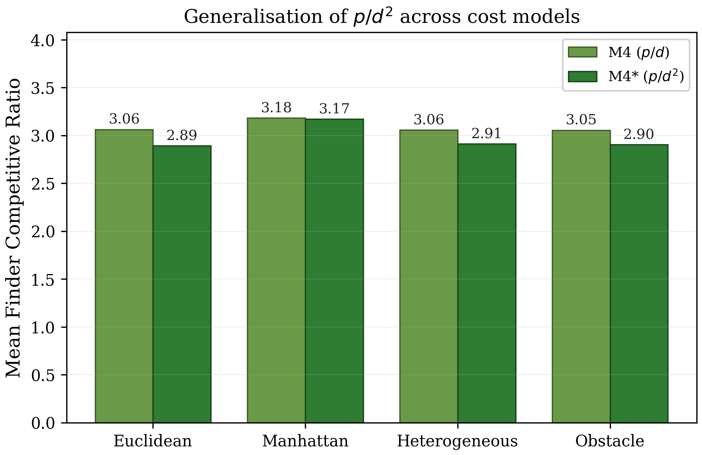
SearchFCR15 · Cost-Model Generalization
16 / Theory ↔ Practice
Every bound holds.
16 / 20
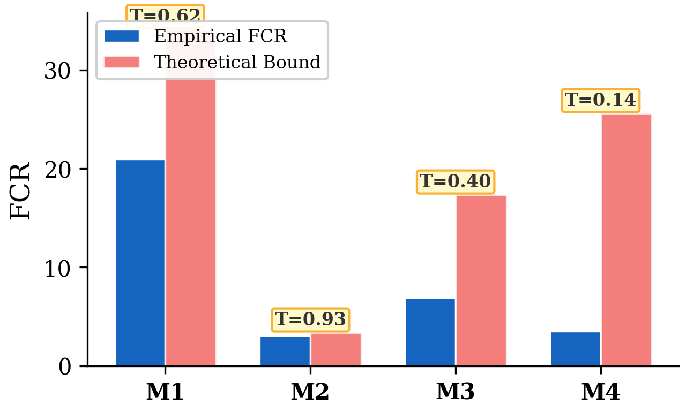
Closed-form upper bounds on the expected FCR for each model — derived from a feasibility-ellipse argument and a nearest-neighbor lemma. All four bounds hold empirically.
| Model | Empirical | Bound | Tightness |
|---|---|---|---|
| M1 | 18.74 | 34.09 | 0.62 |
| M2 | 2.83 | 3.05 | 0.93 |
| M3 | 6.32 | 17.34 | 0.40 |
| M4 (tightened) | 3.16 | 4.78 | 0.66 |
Tightness = empirical / bound; closer to 1 is tighter. M4 bound improved 2.9× over the prior derivation.
SearchFCR16 · Theoretical Validation
17 / Reproducibility
Runs on real drones, in sim.
17 / 20
M1 — RANDOM | FCR 18.74
M4★ — AUCTION + CHAIN | FCR 3.11

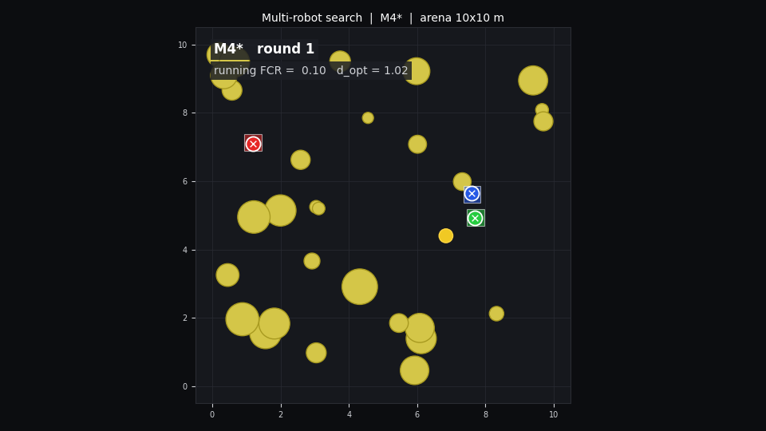
FRAME 01 — Auction resolves anchors
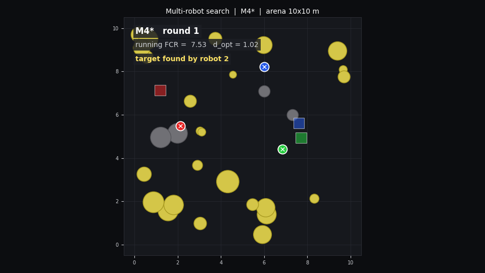
FRAME 02 — Chains execute in flight
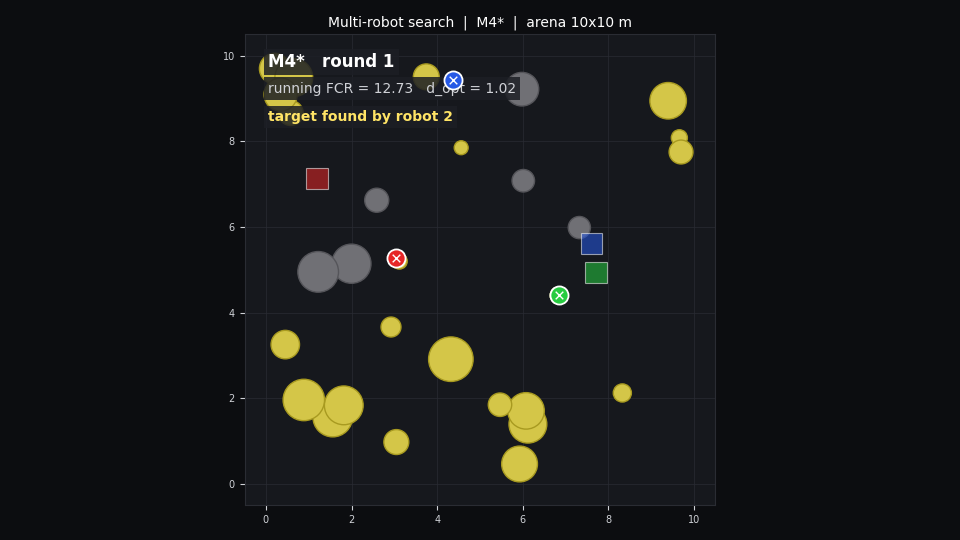
FRAME 03 — Target found by R2
Same map · same 3 robots · same target — radically different paths.
PYBULLET · MATPLOTLIB RENDERER
18 / SearchFCR
A benchmark you can fork.
18 / 20
How you can contribute or check our work out
Reproducible Python library + CLI + interactive React simulator.
# reproduce every figure
$ python reproduce_thesis.py
# sweep an axis
$ searchfcr sweep --param energy \
--range 8,30 --models M3,M4,M4star
# benchmark default suite
$ searchfcr bench --suite default
$ python reproduce_thesis.py
# sweep an axis
$ searchfcr sweep --param energy \
--range 8,30 --models M3,M4,M4star
# benchmark default suite
$ searchfcr bench --suite default
github.com/foojanbabaeeian/Multi-Robot-Algo
MODELS
7
incl. Hungarian baselines
BID FUNCTIONS
5
extensible API
COST MODELS
4
euclidean, manhattan, hetero, obstacles
EXPERIMENTS
8
fixed-seed reproducible
TRIALS / CONFIG
5,000
paired Monte Carlo
UNIT TESTS
37
pytest, 25s
SearchFCR18 · Reproducibility
19 / Closing
Four takeaways.
19 / 20
01
Communication beats fleet size.
The dominant lever is whether robots talk — not how many you launch.
02
SSI > Hungarian.
Iterative re-bidding solves the clustering pathology that breaks one-shot global assignment.
03
Chain trips, not bigger batteries.
Multi-node sorties recover 90% of the energy penalty — in software.
04
p/d² is the right bid under finite E.
Best FCR on every energy-constrained config · advantage grows under tight budgets and noisy priors.
CITE
Babaeiyan Ghamsari & Morales-Ponce, 2026 · SearchFCR: A Benchmark for Budgeted Multi-Robot Search.
github.com/foojanbabaeeian/Multi-Robot-Algo
SearchFCR19 · Closing · Thank you